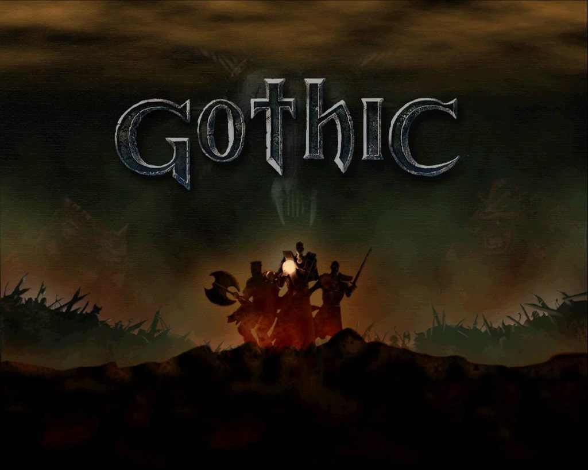
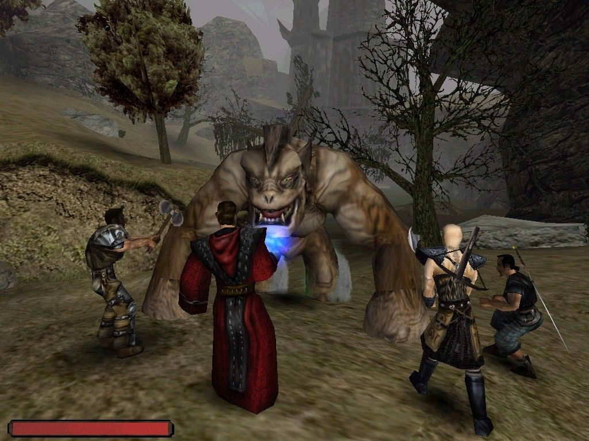

Fabuła
Akcja gry rozgrywa się w fikcyjnej krainie fantasy, w której toczy się wojna pomiędzy
ludzkim królestwem Myrtany, a orkami. Uzbrojenie królewskich żołnierzy wytwarzane jest z surowca
zwanego magiczną rudą. Celem zapewnienia dostaw rudy król Rhobar II decyduje o utworzeniu
kolonii
karnej w Górniczej Dolinie na wyspie Khorinis, gdzie pilnowani przez strażników skazańcy
wydobywają
rudę. Zsyła się do niej wszystkich więźniów królestwa niezależnie od popełnionego czynu. Aby
uniemożliwić ucieczkę z doliny król wzywa dwunastu magów, by otoczyli oni kolonię magiczną
barierą
uniemożliwiającą więźniom ucieczkę, lecz pozwalającą na wtrącanie do niej nowych skazańców. W
trakcie tworzenia bariera wymyka się spod kontroli więżąc i skazańców, i strażników, i magów.
Skutkiem tego wydarzenia jest bunt osadzonych po którym przejmują oni kontrolę nad kopalniami
rudy
oraz zmuszają króla do prowadzenia wymiany handlowej – w zamian za rudę więźniowie otrzymują
zamawiane przez siebie dobra. W czasie, w którym rozgrywa się gra uwięzieni w koloni karnej są
podzieleni na trzy frakcje – każda z siedzibą w jednym z obozów znajdujących się na terytorium
kolonii. Magowie podzieleni są na krąg ognia – z siedzibą w Starym Obozie – i krąg wody –
przebywający w Nowym Obozie.

Rozgrywka
Akcja Gothica została przedstawiona z perspektywy trzeciej osoby, a świat gry jest
otwarty.
Obszar jest ograniczony uzasadnioną fabularnie magiczną barierą – gracz odnosi obrażenia podczas
próby przejścia na drugą stronę.
Rozwój postaci
Zdolności bohatera są opisane za pomocą czterech współczynników: siły, zręczności, many i
punktów
życia. Postać bohatera może być rozwijana poprzez zdobywanie punktów doświadczenia, co skutkuje
zwiększaniem poziomu doświadczenia. Za każdy poziom Bezimienny uzyskuje 10 punktów umiejętności
oraz
zwiększa się ilość jego punktów życia. Punkty umiejętności można spożytkować na naukę wybranej
przez
siebie umiejętności, bądź na podniesienie poziomu współczynników. W tym celu należy odnaleźć
bohatera niezależnego pełniącego rolę nauczyciela. Poza niezależnymi nauczycielami niektórzy
bohaterowie niezależni zgodzą się szkolić postać gracza pod warunkiem przynależności do
określonej
frakcji. Współczynniki można też zwiększyć spożywając niektóre eliksiry i pokarmy. Gracz może
zdobyć
takie umiejętności jak: posługiwanie się bronią jednoręczną, dwuręczną, łukami, kuszami,
otwieranie
zamków wytrychem, skradanie się, akrobatykę, kradzież kieszonkową oraz oprawianie zwierząt.
Kolejne
kręgi magii, umożliwiające dostęp do silniejszych zaklęć, bohater może opanowywać na tej samej
zasadzie, co umiejętności.

Frakcje
W początkowym etapie gry bohater musi zostać członkiem jednej z dostępnych frakcji, aby przejść
do
dalszego ciągu rozgrywki. Postać gracza może zostać członkiem jednego z trzech obozów. W każdym
z
nich przynależy do jednego z dostępnych w danym obozie stanowisk, zwanych w grze gildiami. Awans
bohatera na poszczególne gildie jest hierarchiczny i w większości przypadków liniowy, a
rezygnacja
ze stanowiska nie jest możliwa. W zależności od obozu nazwy dostępnych gildii to: cień, a
następnie
strażnik lub mag ognia – w Starym Obozie; W Nowym Obozie kolejno: szkodnik, najemnik, mag wody;
W
Bractwie Śniącego: nowicjusz i strażnik świątynny. Wybór gildii ma wpływ na dostęp do
nauczycieli, u
których można podwyższać statystyki postaci, oraz decyduje o dostępnym graczowi opancerzeniu.
Przynależność nie ma znaczącego wpływu na przebieg fabuły. Wybór gracza teoretycznie nie ma
także
wpływu na możliwą ścieżkę rozwoju postaci – jako członek każdego z obozów bohater ma dostęp do
nauczycieli wszystkich rodzajów umiejętności – włączywszy w to nauczycieli niezależnych. Tym
niemniej w przypadku Bractwa Śniącego możliwości rozwoju postaci maga są ograniczone.
Świat gry
Gracz może przyłączyć się do jednego z trzech istniejących wewnątrz kolonii obozów: Starego
Obozu,
Nowego Obozu lub Bractwa Śniącego.
Streszczenie
Bohater gry to więzień o nieznanym imieniu, wtrącony do kolonii karnej za nieznane graczowi
przestępstwo. Jednym z jego początkowych zadań jest staranie się o przynależność do jednego z
obozów[5]. W tym celu Bezimienny musi wykonywać zadania zlecane mu przez ważne osobistości w
wybranym obozie.
Po przystąpieniu do którejkolwiek frakcji bohater otrzymuje od jej władz polecenie pomocy
jednemu z
obozów – Bractwu Śniącego – w przygotowaniach rytuału nawiązania kontaktu z czczonym przez
członków
obozu bóstwem – Śniącym. Wyznawcy Śniącego wierzą, że gdy dojdzie do przebudzenia ich śpiącego
boga,
pomoże im on wydostać się z kolonii karnej. Skazaniec otrzymuje prawo do audiencji u przywódcy
Bractwa – Y'Beriona. Każe on odnaleźć bohaterowi kamień ogniskujący – artefakt, który był
wykorzystywany w procesie tworzenia magicznej bariery. Po odnalezieniu kamienia alchemik Bractwa
imieniem Cor Kalom informuje Bezimiennego, że do przygotowania rytuału potrzebna jest mu
wydzielina
żyjących w Starej Kopalni groźnych stworzeń zwanych pełzaczami. W tym celu Bractwo regularnie
wysyła
do kopalni strażników świątynnch, którzy przynoszą Cor Kalomowi wnętrzności zabitych stworzeń.
Cor
Kalom uważa jednak, że musi istnieć efektywniejsze źródło wydzieliny niż wnętrzności pełzaczy i
wysyła bohatera na wyprawę celem znalezienia go. Bohater udaje się do kopalni, gdzie odkrywa
lokalizację gniazda stworzeń. Dostaje się do niego, pokonuje ich królową i zabiera jaja pełzaczy
do
Cor Kaloma. Ostatnią rzeczą potrzebną do przeprowadzenia rytuału jest księga zwana Almanachem –
zawiera ona instrukcje wykorzystywania kamienia ogniskującego. Bezimienny znajduje ją w jaskini
będącą kryjówką wrogo nastawionych czarnych goblinów.
Uczestnikom rytuału – łącznie z bohaterem – objawia się wizja ruin, w których rezydują orkowie.
Tuż
po zakończeniu wizji przewodzący ceremonii Y'Berion traci przytomność. Bezimienny zostaje
wysłany na
pomoc ekspedycji wysłanej w celu zbadania leżącego w pobliżu obozu Bractwa cmentarzyska orków.
Na
miejscu okazuje się, że ekspedycja zawiodła, a cmentarzysko nie zawiera żadnej wskazówki co do
dalszych działań. Bohater wraca do obozu. Wkrótce potem Y'Berion umiera. Tuż przed śmiercią
ostrzega
przed dalszymi próbami budzenia Śniącego i upatruje nadziei na wolność w planie magów wody z
Nowego
Obozu. Plan ów polega na detonacji wielkiego kopca magicznej rudy. Na polecenie arcymaga wody
imieniem Saturas Bezimienny odnajduje pozostałe kamienie ogniskujące i zostaje wysłany z misją
przekonania magów ognia ze Starego Obozu do podjęcia próby zniszczenia bariery.